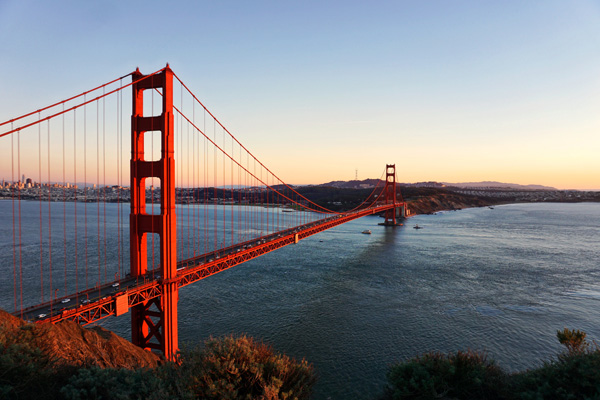

The Golden Gate Bridge is in San Francisco, California. Despite rumors, the bridge is not a golden color nor named after the Gold Rush. It was actually named after the Golden Gate Strait, the stretch of water below the bridge. The Golden Gate Bridge was the longest suspension bridge in the world until 1964.
Go Back